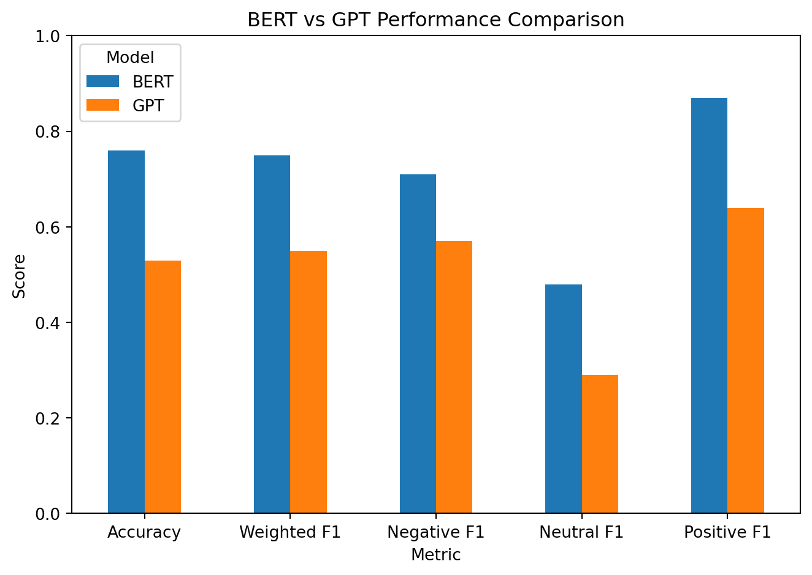

NLP Sentiment Analysis – BERT vs Generative AI
NLP
Machine Learning
BERT
AI
Comparison of BERT and GPT-based approaches for sentiment classification of employee reviews.
Overview
- Objective: Compare BERT vs GPT for sentiment classification
- Data: 800,000+ Glassdoor employee reviews
- Task: Classify sentiment (positive / neutral / negative)
- Business Value: Enable scalable employee feedback analysis
This project applies natural language processing (NLP) to transform large-scale unstructured employee reviews into actionable insights. It compares a fine-tuned transformer model (BERT) with a prompt-based generative AI approach (GPT).
Key Result
- BERT outperformed GPT across all evaluation metrics
- Strongest performance: Positive sentiment (F1 = 0.87)
- Weakest area: Neutral sentiment (both models struggled)
- GPT showed lower consistency in classification
Business Context
Organizations receive large volumes of employee feedback, making manual analysis inefficient and inconsistent.
Automated sentiment analysis enables companies to:
- Identify workplace issues at scale
- Monitor employee satisfaction trends
- Support retention and HR decision-making
This project demonstrates how AI can convert unstructured text into meaningful business insights.
Dataset
The dataset consists of 800,000+ employee reviews, including:
- Company name
- Employee rating
- Review summary
- Pros and cons
Data Preparation
- Combined text fields into a single review variable
- Mapped ratings into sentiment categories
- Split data into training and test sets (80/20)
- Applied preprocessing and tokenization
Methodology
Model 1: BERT (Fine-tuned)
- Transformer-based model
- Uses bidirectional context
- Supervised learning approach
- Optimized for classification tasks
Model 2: GPT (Prompt-based)
- Zero-shot / few-shot prompting
- No training required
- Flexible but less consistent
Model Selection Rationale
BERT was selected as the primary model due to its strong performance in supervised text classification tasks and its ability to capture contextual meaning using bidirectional representations.
GPT was included as a comparison to evaluate the effectiveness of prompt-based approaches in classification tasks without model fine-tuning.
Reported Results
| Metric | BERT | GPT |
|---|---|---|
| Accuracy | 0.76 | 0.53 |
| Weighted F1 | 0.75 | 0.55 |
| Negative F1 | 0.71 | 0.57 |
| Neutral F1 | 0.48 | 0.29 |
| Positive F1 | 0.87 | 0.64 |
Interpretation
BERT consistently outperformed GPT across all metrics.
- Strongest improvement: Positive sentiment classification
- Both models struggled with neutral sentiment, indicating ambiguity in labels
- GPT showed weaker and less stable predictions
Key takeaway:
Fine-tuned models are significantly more reliable than prompt-based approaches for structured classification tasks.
Performance Comparison
The chart below compares model performance across key evaluation metrics:
BERT shows consistently higher performance across all evaluation metrics, with the largest gap in positive sentiment classification.
Confusion Matrix Insights
- BERT performed strongest on positive sentiment, with high correct classification rates
- Neutral sentiment was frequently misclassified as positive
- GPT showed higher confusion across all classes
- Class separation was weaker in GPT predictions
This highlights the importance of model training and task-specific optimization.
Limitations
The performance of both models is influenced by the quality and structure of the dataset. Neutral sentiment was particularly difficult to classify, likely due to ambiguity in labeling.
Additionally, GPT performance depends heavily on prompt design, which introduces variability and reduces consistency compared to supervised approaches.
Ethical Considerations
- Potential bias in employee review data
- Limited transparency in model decisions
- Data privacy and governance concerns
- Need for human oversight in AI-driven insights
Business Impact
- Enables scalable analysis of employee feedback
- Supports data-driven HR decision-making
- Identifies sentiment trends across organizations
- Reduces manual analysis effort
Key Learning
- Fine-tuned models outperform prompt-based approaches in structured tasks
- Data quality and labeling strongly impact performance
- Generative AI is flexible but less reliable without constraints
Technical Stack
- Python
- pandas, numpy
- Hugging Face Transformers (BERT)
- Tokenization (WordPiece)
- Machine Learning & Deep Learning